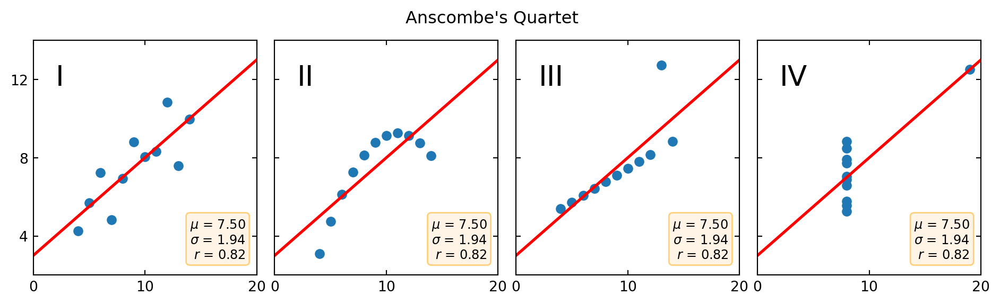

Show the code
# packages
import numpy as np
import pandas as pd
import matplotlib.pyplot as plt
# Define the four datasets
x = [10, 8, 13, 9, 11, 14, 6, 4, 12, 7, 5]
y1 = [8.04, 6.95, 7.58, 8.81, 8.33, 9.96, 7.24, 4.26, 10.84, 4.82, 5.68]
y2 = [9.14, 8.14, 8.74, 8.77, 9.26, 8.10, 6.13, 3.10, 9.13, 7.26, 4.74]
y3 = [7.46, 6.77, 12.74, 7.11, 7.81, 8.84, 6.08, 5.39, 8.15, 6.42, 5.73]
x4 = [8, 8, 8, 8, 8, 8, 8, 19, 8, 8, 8]
y4 = [6.58, 5.76, 7.71, 8.84, 8.47, 7.04, 5.25, 12.50, 5.56, 7.91, 6.89]
datasets = {"I": (x, y1), "II": (x, y2), "III": (x, y3), "IV": (x4, y4)}
# Create subplots
fig, axs = plt.subplots(
1, 4, sharex=True, sharey=True, figsize=(12, 3),
gridspec_kw={"wspace": 0.08, "hspace": 0.08},
)
axs[0].set(xlim=(0, 20), ylim=(2, 14))
axs[0].set(xticks=(0, 10, 20), yticks=(4, 8, 12))
# Plot each dataset with regression line and summary stats
for ax, (label, (x, y)) in zip(axs.flat, datasets.items()):
ax.text(0.1, 0.9, label, fontsize=20, transform=ax.transAxes, va="top")
ax.tick_params(direction="in", top=True, right=True)
ax.plot(x, y, "o")
# Linear regression
slope, intercept = np.polyfit(x, y, deg=1)
ax.axline(xy1=(0, intercept), slope=slope, color="r", lw=2)
# Statistics box
stats = (
f"$\\mu$ = {np.mean(y):.2f}\n"
f"$\\sigma$ = {np.std(y):.2f}\n"
f"$r$ = {np.corrcoef(x, y)[0][1]:.2f}"
)
bbox = dict(boxstyle="round", fc="blanchedalmond", ec="orange", alpha=0.5)
ax.text(
0.95, 0.07, stats, fontsize=9, bbox=bbox,
transform=ax.transAxes, horizontalalignment="right",
)
plt.suptitle("Anscombe's Quartet")
plt.show()